an extra work is required to make 3D.
"WebGL is a 2D API" – greggman @ html5rocks.com
"2D and 3D are just two possible usage patterns" – hacks.mozilla.org

Credits: hacks.mozilla.org
attribute vec2 position;
void main () {
gl_Position = vec4(2.0*position-1.0, 0.0, 1.0);
}
uniform vec2 resolution;
void main () {
vec2 pos = gl_FragCoord.xy / resolution;
gl_FragColor = vec4(pos, 0.5, 1.0);
}
Hackday at Zengularity
a js13k game made with pure WebGL
The world simulated with Cellular Automata in a logic shader.
All game graphics and UI rendered in another render shader.
More infos on greweb.me
stackgl is an open software ecosystem for WebGL, built on top of browserify and npm.
It is easy to use parts of stackgl à la carte, and because it is written from the bottom up, you can always drill down a layer.
More JavaScript-ish API:
infer uniforms, bind them with JavaScript setters, DRY,...
iPhoto like slideshow transitions using WebGL – @devongovett
WebGL/GLSL transitions in your browser. Some of these blow my mind – @zeh
The last place you'd expect to see WebGL – @creativejs
Currently 53 transitions made by 18 contributors.